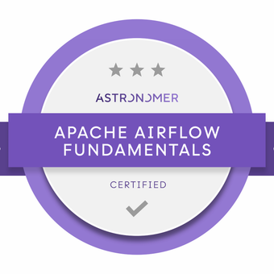

Jose Cerván - Data Engineer
Career Objectives
Data Engineer with a strong foundation in engineering and a keen interest in transitioning into a business-focused role.
Possesses a deep understanding of data architecture, ETL processes, and data modeling, coupled with a strategic mindset
and a passion for driving business value through data-driven insights.
Problem-solving.
Excels in translating complex technical concepts into actionable business recommendations and collaborating with stakeholders
to identify opportunities for growth and optimization. Seeking to leverage analytical skills and business acumen to contribute
to strategic decision-making and drive organizational success.
"Reading and solving"
Professional Experience
Senior Data Engineer - Team Lead@Next Digital
sep 2024 - present
-
Working on behalf of Iberia Data Platform (Data Commercial)
- Leading a squad of Data Engineers and Analysts
- Gathering requirements and collaborating with cross-functional teams. Designing end-to-end data products
- Defining ETL/ELT processes using DBT, Airflow, AWS (Redshift, S3, EKS, ECS, EMR...) and visualizing in PowerBI service
- Defining data quality (DBT, Airflow)
- Monitoring services and processes with Grafana and Prometheus
- Implementing CI/CD pipelines using GitLab
- Mentoring data engineers
- Involved in Data Engineer technical selection
- Experience in a 24/7 on-call support team (several critical services from Iberia Data Platform)
Data Engineer@Vodafone
oct 2022 - sep 2024
-
Working at Vodafone Innovation Hub
- Designed and implemented robust data pipelines using AWS services such as Glue, Lambda and Kinesis, optimizing real-time data flow and processing
- Managed and configured cloud databases like Redshift and RDS to store and query large volumes of data with high availability and performance
- Implemented data storage solutions on S3, ensuring compliance with security policies and optimizing storage cost and performance
- Optimized query performance and database storage through configuration tuning and index design, improving data access and processing efficiency
- Monitored and maintained data quality by implementing monitoring processes and alerts, ensuring data integrity and accuracy at all times
- Collaborated closely with development teams and data analysts to understand their needs and provide efficient and effective data solutions
Stack: Git · Docker · Python · Scrum · Kubernetes · Jenkins · Data Engineering · Linux · AWS
Data Engineer@Next Digital
jul 2021 - oct 2022
-
Working on behalf of Iberia Data Platform (Data Customer)
- Developed and maintained RESTful APIs to facilitate seamless communication between different departments, including integration with the official website (iberia.com)
- Conducted data modeling to enhance data integrity and consistency in the data warehouse
- Designed and implemented multiple ETL processes for efficient data ingestion from various sources
- Built and maintained robust data pipelines to support Business Intelligence (BI) operations, ensuring timely and accurate data delivery
- Provided 24/7 end-to-end support to ensure the smooth operation and reliability of the Iberia Data Platform processes
- Collaborated with clients to gather requirements and designed tailored solutions, including ETL processes, APIs, data pipelines, and interactive dashboards
Stack: FastAPI · JavaScript · PySpark · HTML · Git · Django · Excel · Docker · dbt · Python · Scrum · SQL · Kubernetes · OOP · Airflow · SQLite · Jenkins · PostgreSQL · AWS
Python Developer@Athento
dec 2020 - jul 2021
- Played a pivotal role in the design and development of a medical prescription prediction system, enhancing the accuracy and efficiency of prescription processes
- Developed and implemented features based on client requirements, ensuring the product met user needs and expectations
- Designed an interactive dashboard for clients, enabling them to make informed strategic decisions based on real-time data and insights
Stack: JavaScript · HTML · Git · Django · Microsoft Excel · Docker · Python · Scrum · SQL · Object-Oriented Programming (OOP) · PostgreSQL · Linux
R&D Engineer@University of Malaga - UMA
feb 2020 - nov 2020
- Designed and developed a simulator focused on transmission and reception of vehicular communication systems
- Collected and analyzed data from vehicle-to-vehicle communications
Stack: FastAPI · MATLAB · JavaScript · Git · Microsoft Excel · LaTeX · Docker · Python · Scrum · SQL · Object-Oriented Programming (OOP) · Jenkins · PostgreSQL · Linux
RAN Engineer - Python Developer@Future Connections
jan 2019 - jan 2020
- Developed advanced modules for managing LTE, UMTS, and GSM mobile networks using EdenNet, improving network performance and reliability
- Conducted network parameterization to optimize KPIs, resulting in enhanced network efficiency and user experience
- Performed data analysis and visualization using Elasticsearch and Kibana, providing actionable insights for network optimization and troubleshooting
Stack: JavaScript · HTML · Git · Microsoft Excel · Docker · Python · Scrum · SQL · Object-Oriented Programming (OOP) · SQLite · PostgreSQL · Linux
Research Intern - Python Developer@University of Malaga - UMA
nov 2017 - dec 2018
- Developed algorithms for research projects (Computer Sciences department)
- Designed a Python-based system for classifying and searching the department's files
- Performed internal website support
Stack: MATLAB · JavaScript · Git · Microsoft Excel · LaTeX · Python · SQL · PostgreSQL · Linux
Skills
Data Engineering
Redshift Airflow DBT Spark TDD SQLCertifications
 Astronomer - Apache Airflow Fundamentals
dbt Labs - dbt Fundamentals
EOI - Python for Data Engineering
Cloud - DevOps
AWS Docker k8s IaC CI/CD LinuxCertifications
 AWS - Cloud Practitioner
AWS - Cloud Practitioner
Soft Skills
Team Leading Communication Mentoring ScrumCertifications
Scaled Agile - SAFe® 5 Agilist